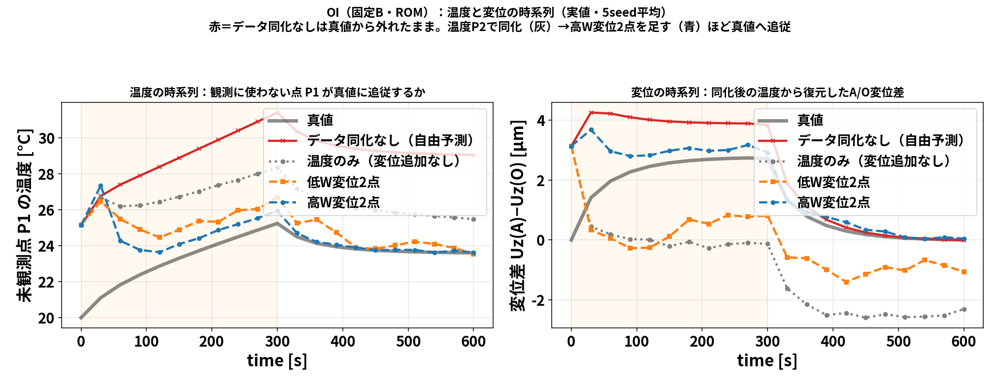
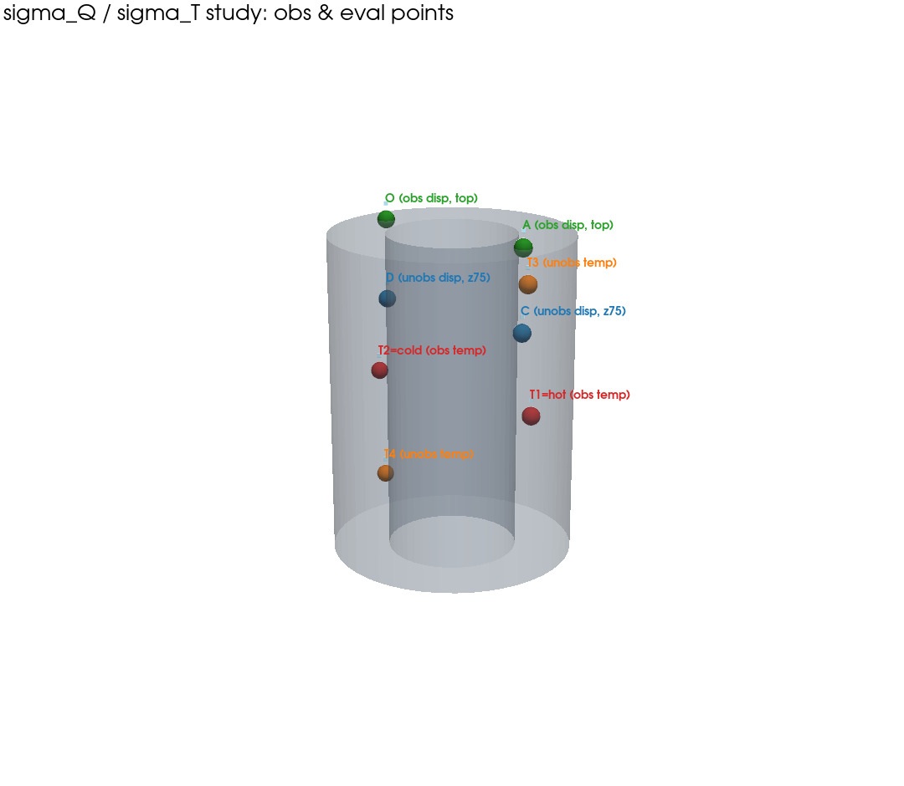

第2回は データ同化 です。データ同化とは、
少ないセンサの測定値を使って、シミュレーションの状態（全体）を真値へ近づける
技術です。この記事では一番シンプルな OI（Optimal Interpolation, 最適内挿） を扱います。
この記事の流れ： 1. OIとは何かを数式で理解する 2. 節点を3つに減らしたミニ模型で、行列計算を手で追って腑に落とす 3. どこを測ると効くかを熱感度（FrontISTRの \(W\) ）の分布で見抜く 4. 最後に、104の実ソルバ（OpenFOAM＋FrontISTR）で回した比較結果を見る
いきなり結果を見ても分からないので、まず仕組み → 次に結果の順で進めます。
本物は固体20,696セルですが、いきなりは分かりません。まず 3点だけの温度 で考えます。
やりたいのは、1点だけ温度計を置いて測り、その1点の情報から 3点全部を真値へ寄せることです。
OI は次の4つの部品でできています。
これらから、更新式は たった1本です：
\[\boxed{\,x^a=x^b+K\,(y-Hx^b)\,}\qquad K=BH^{\mathsf T}\bigl(HBH^{\mathsf T}+R\bigr)^{-1}\]
言葉にすると：「予報のハズレ」に「配分の重み \(K\) 」をかけて予報を直す、それだけです。 \(K\) を作るのに \(B\) （点どうしの連動）が効くので、次に具体的な数字で計算してみます。
背景共分散 \(B\) の中身：いきなり数字にせず、まず記号で書くと構造が見えます。 \(B\) の 対角は各点の分散、非対角は点どうしの共分散です:
\[B=\begin{pmatrix} \sigma_{11} & \sigma_{12} & \sigma_{13}\\ \sigma_{21} & \sigma_{22} & \sigma_{23}\\ \sigma_{31} & \sigma_{32} & \sigma_{33} \end{pmatrix}\]
ここで \(\sigma_i\) は点 \(i\) の予報の標準偏差、 \(\rho_{ij}\) は点 \(i,j\) の相関係数（ \(-1\) 〜 \(1\) ）。 \(B\) は対称なので \(\sigma_{ij}=\sigma_{ji}\) 。この記号のまま更新式を追えるのがポイントです。
数字を入れるとき：どの点も予報は \(\sigma_i=2\) ℃ ばらつくとし（ \(\sigma_i^2=4\) ）、相関は 隣どうし \(\rho_{12}=\rho_{23}=0.5\) （連動大）、離れた \(\rho_{13}=0.2\) （連動小）:
\[\sigma_{11}=\sigma_{22}=\sigma_{33}=4,\quad \sigma_{12}=\sigma_{23}=0.5\times2\times2=2,\quad \sigma_{13}=0.2\times2\times2=0.8 \;\Rightarrow\; B=\begin{pmatrix}4 & 2 & 0.8\\ 2 & 4 & 2\\ 0.8 & 2 & 4\end{pmatrix}.\]
観測演算子 \(H=(1,\ 0,\ 0)\) 。観測ノイズ 温度計の標準偏差 0.3 ℃ なので \(R=0.3^2=0.09\) 。
\(H=(1,\ 0,\ 0)\) が点1を抜き出すので、 \(BH^{\mathsf T}\) ＝「 \(B\) の1列目」、 \(HBH^{\mathsf T}\) ＝「 \(B\) の (1,1) 成分」。 まず 記号のまま書くと、ゲインの構造が見えます:
\[BH^{\mathsf T}=\begin{pmatrix}\sigma_{11}\\ \sigma_{21}\\ \sigma_{31}\end{pmatrix},\qquad HBH^{\mathsf T}+R=\sigma_{11}+R,\qquad K=\frac{1}{\sigma_{11}+R}\begin{pmatrix}\sigma_{11}\\ \sigma_{21}\\ \sigma_{31}\end{pmatrix}.\]
＝「観測点との共分散 ÷（観測点の分散＋ノイズ）」。数字を入れると（ \(\sigma_{11}=4,\ \sigma_{21}=2,\ \sigma_{31}=0.8,\ R=0.09\) ）:
\[K=\frac{1}{4+0.09}\begin{pmatrix}4\\ 2\\ 0.8\end{pmatrix} =\begin{pmatrix}0.978\\ 0.489\\ 0.196\end{pmatrix}.\]
読み方：点1（測った点）は重み 0.978 でほぼ観測を信じる。点2は 0.489、点3は 0.196 と、 測っていない点にも \(B\) の相関を通じて補正が配られる。近い点2ほど強く、遠い点3ほど弱く。
予報のハズレ： \(y-Hx^b=30-25=5\) ℃。これをゲインで配分:
\[x^a=x^b+K\times5 =\begin{pmatrix}25\\ 25\\ 25\end{pmatrix} +\begin{pmatrix}0.978\\ 0.489\\ 0.196\end{pmatrix}\times5 =\begin{pmatrix}29.89\\ 27.44\\ 25.98\end{pmatrix}\]
| 点 | 予報 \(x^b\) | 同化後 \(x^a\) | 真値 | 効果 |
|---|---|---|---|---|
| 点1（観測） | 25 | 29.89 | 30 | ほぼ真値 |
| 点2（未観測） | 25 | 27.44 | 27 | 真値へ寄った |
| 点3（未観測） | 25 | 25.98 | 25 | ほぼ真値 |
たった1点の温度計で、測っていない点2・点3まで真値へ寄りました。 これが OI の効果です。ミソは 背景共分散 \(B\) が「点どうしの連動」を持っていること。 「点1が予報より5℃高かった → 連動する点2も高いはず」と \(B\) が教えてくれるので、補正が全体に広がります。
ここまでは温度だけでした。本研究の狙いは 温度と変位から、発熱量 \(Q\) まで当てることです。 「温度を測る」「変位を測る」「 \(Q\) を同定する」――この3つが、同じ1本の更新式
\[x^a=x^b+K\,(y-Hx^b),\qquad K=BH^{\mathsf T}\bigl(HBH^{\mathsf T}+R\bigr)^{-1}\]
の どこに入るかを、数字を入れずに 文字式のまま追うと本質がはっきりします。状態を3変数
\[x=(T_1,\ T_2,\ Q)\]
に絞ります。物理の仮定は2つだけ:
まず背景共分散 \(B\) を 記号のまま作ります。温度の予報ばらつき \(\sigma_T\) に加え、 温度が \(Q\) で決まるので温度と \(Q\) は必ず連動します。この連動を \(a=(s_1,\ s_2,\ 1)^{\mathsf T}\) の外積で入れると:
\[B=\begin{pmatrix}\sigma_T^2 & 0 & 0\\ 0 & \sigma_T^2 & 0\\ 0 & 0 & 0\end{pmatrix} +\sigma_Q^2\,a\,a^{\mathsf T} =\begin{pmatrix} \sigma_T^2+\sigma_Q^2 s_1^2 & \sigma_Q^2 s_1 s_2 & \sigma_Q^2 s_1\\ \sigma_Q^2 s_1 s_2 & \sigma_T^2+\sigma_Q^2 s_2^2 & \sigma_Q^2 s_2\\ \sigma_Q^2 s_1 & \sigma_Q^2 s_2 & \sigma_Q^2 \end{pmatrix}.\]
ここが全ての鍵：右上・左下の \(B_{TQ}=\sigma_Q^2\,(s_1,\ s_2)\) が 「温度と \(Q\) の相関」。 これがゼロだと、温度や変位をいくら測っても \(Q\) は1ミリも動きません。 \(Q\) が同定できるのは、この \(B_{TQ}\neq0\) のおかげ（＝温度が \(Q\) で決まるから）です。
温度計を点1に置くと \(H=(1,\ 0,\ 0)\) 、観測ノイズ分散を \(R=r\) とします。 \(BH^{\mathsf T}\) は「 \(B\) の1列目」なので
\[BH^{\mathsf T}=\begin{pmatrix}\sigma_T^2+\sigma_Q^2 s_1^2\\ \sigma_Q^2 s_1 s_2\\ \sigma_Q^2 s_1\end{pmatrix},\qquad HBH^{\mathsf T}+R=\sigma_T^2+\sigma_Q^2 s_1^2+r,\]
\[K=\frac{1}{\sigma_T^2+\sigma_Q^2 s_1^2+r} \begin{pmatrix}\sigma_T^2+\sigma_Q^2 s_1^2\\ \sigma_Q^2 s_1 s_2\\ \sigma_Q^2 s_1\end{pmatrix} \ \Rightarrow\ \boxed{\,K_Q=\frac{\sigma_Q^2 s_1}{\sigma_T^2+\sigma_Q^2 s_1^2+r}\,}.\]
点1の温度しか測っていないのにゲインの \(Q\) 行 \(K_Q\neq0\) 。だから予報のハズレ \(y-Hx^b\) が \(Q^a=Q^b+K_Q(y-Hx^b)\) で \(Q\) を動かします。分子の \(\sigma_Q^2 s_1\) は、まさに \(B_{T_1Q}\) 。 「温度を測ると \(Q\) が同定される」の正体は、この \(B_{T_1Q}=\sigma_Q^2 s_1\) です。
変位計は温度を直接は測らず、温度の重み付き和を測ります。だから 観測演算子 \(H\) が感度 \(w\) そのものになります （これが本研究の \(W=K_s^{-1}H_T\) の1行版）:
\[H_u=(w_1,\ w_2,\ 0).\]
\(Q\) に効くのはゲインの3行目だけ見れば十分で、 \(BH_u^{\mathsf T}\) の第3成分は
\[\bigl(BH_u^{\mathsf T}\bigr)_Q=\sigma_Q^2 s_1 w_1+\sigma_Q^2 s_2 w_2=\sigma_Q^2\,(s\cdot w)\neq0.\]
温度と違い、変位は 複数点の温度の和なので、その1個の測定値が \(B\) を通じて \(T_1,\ T_2,\ Q\) 全部へ配られます。 \(Q\) への効き目は \(\sigma_Q^2\,(s\cdot w)\) ＝「感度 \(s\) と \(w\) の内積」で決まる、というのが文字式で読み取れる要点です。
「変位計は温度を測っていないのに、なぜ温度が良くなるのか」を、共分散の式で最後まで追います。
① 変位のズレ＝温度誤差の射影。温度の予報誤差を \(\delta T=T-T^b\) （共分散 \(B\) ）とすると、 変位は温度の線形写像なので
\[u-u^b=w^{\mathsf T}\delta T=w_1\,\delta T_1+w_2\,\delta T_2+\cdots\]
変位計は「温度誤差の \(w\) 方向成分」を1つの数として読む器械です。
② 温度が動く理由＝共分散 \(Bw\) 。 \(H=w^{\mathsf T}\) をゲインに入れると
\[K=\frac{Bw}{w^{\mathsf T}Bw+r},\qquad w^{\mathsf T}Bw=\mathrm{Var}(u).\]
温度 \(T_i\) が更新されるのは \(\mathrm{Cov}(T_i,\ u)\neq0\) （＝ベクトル \(Bw\) の第 \(i\) 成分がゼロでない）、 つまり「 \(T_i\) の誤差と変位の誤差が連動している」から。変位のハズレが、連動の強さに比例して各温度へ配られます。
③ どれだけ良くなるか（事後分散）：
\[B^a=B-\frac{(Bw)(Bw)^{\mathsf T}}{w^{\mathsf T}Bw+r},\qquad \Delta=\mathrm{tr}\,B-\mathrm{tr}\,B^a=\frac{\lVert Bw\rVert^2}{w^{\mathsf T}Bw+r}.\]
＝「変位から見える温度パターン \(Bw\) の方向」の分散が丸ごと消えます。
④ 核心：温度誤差が「共通の型」なら変位1本で全温度が直る。 本研究の温度誤差の主因は発熱量 \(Q\) の間違いで、その誤差は1つの空間パターン \(\varphi\) （≒PODモード1「全体が昇温する型」）で起きます： \(\delta T\approx a\,\varphi\) （ \(a\) はスカラー係数、 \(\mathrm{Var}(a)=\sigma_a^2\) ）。このとき
\[u-u^b=g\,a,\qquad g\equiv w^{\mathsf T}\varphi\]
つまり変位計は「型の係数 \(a\) をゲイン \(g\) で測る器械」。 \(a\) が決まれば \(T^a=T^b+\varphi\,\hat a\) で全点の温度が一斉に直ります（未観測点まで直る理由もこれ）。係数の事後分散は
\[\mathrm{Var}(a\mid u)=\frac{\sigma_a^2\,r}{g^2\sigma_a^2+r}.\]
ここに高W/低Wの答えが全部入っています：
§5の実験値（温度のみ3.52K／低W変位2.43K／高W変位0.86K）は、この \(g\) の大小の直接の現れです。
⑤ 数値で確認（2点、 \(\sigma=1,\ \rho=0.9,\ w=(0.5,\ 0.2),\ r=0.01\) ）：
\[w^{\mathsf T}Bw=0.25+0.04+2(0.9)(0.1)=0.47,\qquad Bw=\begin{pmatrix}0.68\\ 0.65\end{pmatrix},\qquad K=\frac{1}{0.48}\begin{pmatrix}0.68\\ 0.65\end{pmatrix}=\begin{pmatrix}1.42\\ 1.35\end{pmatrix}.\]
分散減少 \(\Delta=0.885/0.48=1.84\) → 温度の総分散 \(2\to0.16\) （92%減）。 注目は \(w_2=0.2\) と小さい \(T_2\) までゲイン1.35で直る点——相関 \(\rho\) が補正を運ぶからです。 比較：温度計1本（点1、 \(r_T=0.09\) ）だと \(\Delta=1.81/1.09=1.66\) →事後0.34。 この条件では変位1本の方が温度計1本より温度を良くします（変位は複数点の誤差をまとめて見るため）。
⑥ EnKFではこの \(Bw=\mathrm{Cov}(T,u)\) を分身たちが自動で作ります （ \(T\) が高い分身は \(u\) も大きい→標本共分散に現れる）。
まとめ：変位観測が温度を直す3条件 ① \(w\) が大きく、誤差の型 \(\varphi\) と揃う点で測る（＝高W点） ② 温度誤差が空間相関を持つ（低次元の「型」で起きる＝PODが2モードで99.9%はまさにこれ） ③ 観測ノイズが信号より小さい（ \(r\lt g^2\sigma_a^2\) ）
\(Q\) の更新だけ取り出すと、ゲインの \(Q\) 行を使って
\[Q^a=Q^b+K_{Q,:}\,(y-Hx^b).\]
これは確率の言葉では、同時分布 \(p(T,Q\mid y)\) から温度を 積分して消す（周辺化） した後の \(Q\) の事後平均そのものです:
\[p(Q\mid y)=\int p(T,Q\mid y)\,dT,\qquad \mathbb E[Q\mid y]=\underbrace{\mathbb E[Q]}_{Q^b} +\underbrace{\mathrm{Cov}(Q,y)\,\mathrm{Cov}(y,y)^{-1}}_{=\,K_{Q,:}}\bigl(y-\mathbb E[y]\bigr).\]
つまり 「周辺化の積分」＝「カルマン更新の \(Q\) の行」。そして \(Q\) と観測の共分散は
\[\mathrm{Cov}(Q,y)=B_{Q,:}\,H^{\mathsf T}=\sigma_Q^2\,(s_1,\ s_2,\ 1)\,H^{\mathsf T}\]
で、温度観測なら \(\sigma_Q^2 s_1\) 、変位観測なら \(\sigma_Q^2(s\cdot w)\) 。 \(Q\) が観測から動く条件は \(\mathrm{Cov}(Q,y)\neq0\) 、すなわち「 \(Q\) を変えると観測が変わる」ことです。 温度も変位も \(Q\) で変わるので、両方が \(Q\) の同定に効きます。
3つの入り方まとめ：
| やりたいこと | 更新式のどこで効くか（文字式） |
|---|---|
| 温度を同化 | \(H\) が温度成分を取り出す（ \(H=(1,0,0)\) ）。 |
| 変位を同化 | \(H\) が 温度→変位の感度 \(w\) になる（ \(H_u=(w_1,w_2,0)\) ）。 |
| \(Q\) を同定 | \(B\) の 温度と \(Q\) の相関 \(B_{TQ}=\sigma_Q^2 s\) が \(\mathrm{Cov}(Q,y)\) を生み、観測が \(Q\) を動かす（＝周辺化）。 |
すべて更新式の \(H\) （何を測るか）と \(B\) （何が連動するか） に落ちます。本物の 20,697 次元 （温度20,696セル＋ \(Q\) ）でも、行列が大きいだけで、やっている計算はこの3×3と同じです。 ただし決め打ち \(B\) の \(\sigma_Q\) で \(Q\) の伸び幅が決まるため、1回では真値まで届かない （60秒ごとに何度も更新）。この決め打ちの弱さを分身の散らばりで作り直すのが EnKF（blog_003）です。
3点模型では「点1を測る」と決め打ちしましたが、本研究では 観測点を感度で設計します。 特に 変位センサをどこに置くかは、FrontISTR で求めた 熱感度 \(W\) の分布で決めます。
温度節点ベクトルを \(T\) 、熱荷重行列を \(H_T\) 、構造剛性行列を \(K_s\) とすると、線形熱弾性では
\[K_s u=H_T T,\qquad W=\frac{\partial u}{\partial T}=K_s^{-1}H_T.\]
\(W_{ij}\) は「温度節点 \(j\) を1 K変えたとき、変位自由度 \(i\) がどれだけ変わるか（m/K）」です。 変位観測点 \(i\) の候補を選ぶときは、その行の大きさ \(S_i=\sum_j \lvert W_{ij}\rvert\) を比べます。 \(S_i\) が大きい場所ほど、温度場の違いが変位観測に強く現れる＝同化に使える情報が大きい。
この \(W\) の行感度を円筒上に色で描くと、どこが高感度かが一目で分かります。
105のFrontISTR（DUMPWパッチ版）が計算した \(W\) の変位行感度を色で表示（灰色は拘束などで除外した点）。 底面固定・上端自由なので、上端（自由端）ほど熱感度が高い。 赤球＝変位観測点 A(+X上面)・青球＝O(−X上面) は、この高感度域に置かれている。
分布から読み取れること：
この感度は 106 のROM中で推測したものではなく、105でFrontISTRを実行して得た結果を使いました。
105…/run/dumpw_cylinder.py が FrontISTR で
DUMPW=YES を指定し、温度→変位感度を出力。105…/run/build_W_from_dumps.py が \(K_s,H_T\) のダンプから \(W=K_s^{-1}H_T\) を構築。105…/run/kinvh_sensitivity.py が行感度 \(S_i\)
を計算し、拘束部の見かけの巨大値を除外して高感度2点・低感度2点を選ぶ。run/run_disp_selection.py
が、温度点に高感度／低感度の変位2点を加えて比較。補足：温度センサの選定はこれとは別で、未知の発熱への感度 \(\partial T/\partial Q\) を使います （「変位センサは \(W\) 、温度センサは \(\partial T/\partial Q\) 」）。
第4節で選んだ観測点を、実際に OI（固定 \(B\) ） で回して確かめます。まず 観測点の場所（3D）:

黒＝温度センサ P2（ヒータ側・中央高さ）、赤＝高W変位2点（上端の自由端）、青＝低W変位2点（底面近くの拘束側）、緑＝A/O（上面）。 第4節の「上端ほど高感度・底面は低感度」という分布どおりの配置になっています。
比較する4構成のうち、下の1つはデータ同化なし、上の3つはすべて温度P2で同化します:
同じ真値・初期条件で OI（106の5点温度ROM、背景共分散 \(B\) を固定） で回し、温度と変位を比べました（5seed平均）。
まず「実際の値」の時系列で追従の様子を見ます。左は観測に使っていない点 P1 の温度、右は変位差 \(U_z(\mathrm A)-U_z(\mathrm O)\) です（どちらも黒太線＝真値）。

赤（データ同化なし）は加熱で真値からどんどん離れ、P1温度は真値25°Cに対し31°Cまで暴走。 温度P2で同化する（灰）と真値へ引き戻され、高W変位2点を足す（青）と未観測点P1でも真値に最も寄り、変位も真値に追従します。 「観測していない場所」まで直るのが、感度の高い点で同化することの効果です。
次に、同じ結果を誤差（RMSE）と変位差でまとめたのが下の図です。

これは OI（最適内挿）によるデータ同化の結果（固定 \(B\) ・ROM）。 左＝温度の推定誤差（全5点RMSE）、右＝変位差 \(U_z(\mathrm A)-U_z(\mathrm O)\) の時刻歴（黒＝真値）。 赤（データ同化なし）は補正されないので真値から最も外れたまま。温度P2で同化すると灰へ改善し、 高W（青）は温度も変位も真値に最も近い。低W（橙）・温度のみ（灰）は温度がなかなか下がらず、 変位に至っては真値から大きく外れる（変位は \(W\) が温度誤差を増幅するため、悪い温度だと特に外れる）。
| 観測構成 | データ同化 | 加熱期(0-300s)の平均温度RMSE |
|---|---|---|
| データ同化なし（自由予測） | なし | 5.27 K（基準線） |
| 温度のみ（変位を足さない） | 温度P2 | 3.52 K |
| 温度＋変位2点（低W） | 温度P2＋変位 | 2.43 K（あまり効かない） |
| 温度＋変位2点（高W） | 温度P2＋変位 | 0.86 K（同化なしの約6倍改善） |
→ 測る場所が悪いと、同化してもほとんど直らない。OI
でも、第4節の感度分布で高W点を選ぶことがそのまま効きます。
（感度 \(W\)
自体は105のFrontISTR計算由来。再現は
run/blog_oi_disp_selection.py。EnKF版でも同じ傾向です。）
ここまでは考え方の理解でした。ここからは 104のOpenFOAM＋FrontISTR実ソルバで回した結果です （106のROMではなく、実ソルバの結果を106の全体ストーリーに追加したもの）。連成の流れ:
flowchart LR
A["OpenFOAM CHT<br/>固体20,696セルの温度"] --> B["セル温度をFEM節点へ補間"]
B --> C["FrontISTR熱弾性解析<br/>温度上昇 → 熱変位"]
C --> D["A/O変位・A−O差<br/>未観測C/D・C−D差"]
D --> E["OIで温度とQを補正<br/>次の60秒計算へ"]
E --> A下の結果グラフがどの点の値かを先に示します（σQ・σTスタディ共通の観測点・評価点）:

円筒上の観測点・評価点。赤＝T1=hot／T2=cold（観測に使う温度2点、中央高さ）、緑＝A/O（観測に使う上面変位）。
橙＝T3/T4（観測に使わない未観測の温度点）、青＝C/D（観測に使わない未観測の変位、中高さ
z=75 mm）。
C−D差は「同化に使っていない別の変位差」で、同化がその未観測点まで当たるか（汎化）を見る評価量です。
（A/Oは実際には上面の +X/−X 節点列の平均。側面投影版は 18_oi_sigma_t_validation.md の
oi_evaluation_locations.png 参照。）
背景発熱量の標準偏差を \(\sigma_Q=0.5,2,6,50\) Wと変え、 \(\sigma_T=1.5\) K・観測点・初期値・60秒更新を揃えて比較しました。 温度は hot/cold と未観測点、変位は上面A/Oとその差、さらに未観測中高さC/DとC−D差を評価しています。

最終の温度場RMSEは 0.090〜0.113 K まで小さくなる一方、推定 \(Q\) は 8.82〜8.96 W で、真値15 Wに届きませんでした。 つまり、温度分布がよく合っても、発熱量 \(Q\) が同じ精度で同定できるとは限らない（弱可同定）。 しかも \(\sigma_Q\) を100倍振ってもほぼ変わらない＝決め打ち \(B\) の調整だけでは \(Q\) を当てられない、というのがOIの弱点です。
背景温度の標準偏差 \(\sigma_T=0.3,0.75,1.237,1.5\) K を実ソルバで比較しました （1.237 Kは、長さ75 mmの温度誤差モードを60秒拡散させた残り \(5\exp[-\alpha(\pi/0.075)^2\,60]=1.237\) K という試算値）。

加熱期の全場温度RMSEは 0.479〜0.482 K、未観測C−D変位差RMSEは 1.188〜1.192 µm と、σTを動かしてもほぼ不変でした。 この固定共分散・固定感度のOIでは、σTだけで温度場・変位差・ \(Q\) を同時に真値へ合わせることはできません （OI一般の限界ではなく、今回の観測配置と共分散近似に対する結論）。詳細は 18_oi_sigma_t_validation.md 参照。
ミニ模型と本物の対応:
| ミニ模型 | 本物（106/104） |
|---|---|
| 3点の温度 | 固体20,696セルの温度（＋発熱 \(Q\) ） |
| 観測1点 | 温度 hot/cold の2点＋上面変位2点 |
| \(B\) を手で置く | \(\sigma_T,\sigma_Q\) を決め打ちして \(B\) を作る（固定） |
| 割り算1回 | \(HBH^{\mathsf T}+R\) の小さい行列を1回だけ逆行列 |
本物の OI も やっていることは全く同じ：予報1本＋固定 \(B\) ＋観測で、更新式 \(x^a=x^b+K(y-Hx^b)\) を回すだけ。 アンサンブル（多数の分身）を使わないので 軽いのが OI の長所です。
一方で \(B\) を 決め打ちする弱点（ \(Q\) が真値に届かない）もあります。 その弱点を アンサンブルで \(B\) を毎回作り直して補うのが、次回の EnKF です。
次回（blog_003）は アンサンブルカルマンフィルタ（EnKF）。 「 \(B\) を決め打ちしない」で、多数の分身の散らばりから \(B\) を毎サイクル作り直すやり方を、 やはり 節点を減らした具体的な手計算で見ていきます。
00_data_assimilation_algorithm.md../../105_0_sensor_placement_sensitivity/docs/03_sensor_design_guide.md18_oi_sigma_t_validation.md02_full_story.md